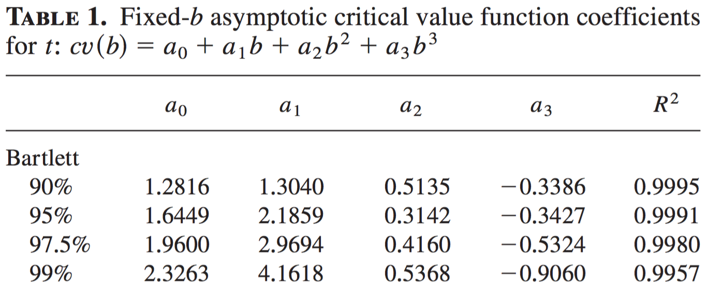

OLS Inference
Last updated on Oct 29, 2021
Asymptotic Theory of the OLS Estimator
OLS Consistency
Theorem: Assume that $(x_i, y_i) _ {i=1}^n$ i.i.d. , $\mathbb E[x_i x_i’] = Q$ positive definite, $\mathbb E[x_i x_i’] < \infty$ and $\mathbb E [y_i^2] < \infty$, then $\hat \beta _ {OLS}$ is a consistent estimator of $\beta_0$, i.e. $\hat \beta = \mathbb E_n [x_i x_i’] \mathbb E_n [x_i y_i]\overset{p}{\to} \beta_0$.
Proof:
We consider 4 steps:
- $\mathbb E_n [x_i x_i’] \xrightarrow{p} \mathbb E [x_i x_i’]$ by WLLN since $x_i x_i’$ iid and $\mathbb E[x_i x_i’] < \infty$.
- $\mathbb E_n [x_i y_i] \xrightarrow{p} \mathbb E [x_i y_i]$ by WLLN, due to $x_i y_i$ iid, Cauchy-Schwarz and finite second moments of $x_i$ and $y_i$ $$ \mathbb E \left[ x_i y_i \right] \leq \sqrt{ \mathbb E[x_i^2] \mathbb E[y_i^2]} < \infty $$
- $\mathbb E_n [x_i x_i’]^{-1} \xrightarrow{p} \mathbb E [x_i x_i’]^{-1}$ by CMT.
- $\mathbb E_n [x_i x_i’]^{-1} \mathbb E_n [x_i y_i] \xrightarrow{p} \mathbb E [x_i x_i’]^{-1} \mathbb E [x_i y_i] = \beta$ by CMT. $$\tag*{$\blacksquare$}$$
Variance and Assumptions
Now we are going to investigate the variance of $\hat \beta _ {OLS}$ progressively relaxing the underlying assumptions.
- Gaussian error term.
- Homoskedastic error term.
- Heteroskedastic error term.
- Heteroskedastic and autocorrelated error term.
Gaussian Error Term
Theorem: Under the GM assumption (1)-(5), $\hat \beta - \beta |X \sim N(0, \sigma^2 (X’X)^{-1})$
Proof:
We follow 2 steps:
- We can rewrite $\hat \beta$ as $$ \begin{aligned} \hat \beta & = (X’X)^{-1} X’y = (X’X)^{-1} X’(X\beta + \varepsilon) \newline &= \beta + (X’X)^{-1} X’ \varepsilon = \newline &= \beta + \mathbb E_n [x_i x_i’]^{-1} \mathbb E_n [x_i \varepsilon_i] \end{aligned} $$
- Therefore: $\hat \beta-\beta = \mathbb E_n [x_i x_i’]^{-1} \mathbb E_n [x_i \varepsilon_i]$. $$ \begin{aligned} \hat \beta-\beta |X & \sim (X’X)^{-1} X’ N(0, \sigma^2 I_n) = \newline &= N(0, \sigma^2 (X’X)^{-1} X’X (X’X)^{-1}) = \newline &= N(0, \sigma^2 (X’X)^{-1}) \end{aligned} $$ $$\tag*{$\blacksquare$}$$
Does it make sense to assume that $\varepsilon$ is gaussian? Not much. But does it make sense that $\hat \beta$ is gaussian? Yes, because it’s an average.
Homoskedastic Error Term
Theorem: Under the assumptions of the previous theorem, plus $\mathbb E[x^4] < \infty$, the OLS estimate has an asymptotic normal distribution: $\hat \beta|X \overset{d}{\to} N(\beta, \sigma^2 (X’X)^{-1})$.
Proof: $$ \sqrt{n} (\hat \beta - \beta ) = \underbrace{\mathbb E_n [x_i x_i’]^{-1}} _ {\xrightarrow{p} Q^{-1} } \underbrace{\sqrt{n} \mathbb E_n [x_i \varepsilon_i ]} _ {\xrightarrow{d} N(0, \Omega)} \rightarrow N(0, \Sigma ) $$ where in general $\Omega = Var (x_i \varepsilon_i) = \mathbb E [(x_i \varepsilon_i)^2]$ and $\Sigma = Q^{-1} \Omega Q^{-1}$. $$\tag*{$\blacksquare$}$$
Given that $Q = \mathbb E [x_i x_i’]$ is unobserved, we estimate it with $\hat{Q} = \mathbb E_n [x_i x_i’]$. Since we have assumed homoskedastic error term, we have $\Omega = \sigma^2 (X’X)^{-1}$. Since we do not observe $\sigma^2$ we estimate it as $\hat{\sigma}^2 = \mathbb E_n[\hat{\varepsilon}_i^2]$.
The terms $x_i \varepsilon_i$ are called scores and we can already see their central importance for inference.
Heteroskedastic Error Term
Assumption: $\mathbb E [\varepsilon_i x_i \varepsilon_j’ x_j’] = 0$, for all $j \ne i$ and $\mathbb E [\varepsilon_i^4] \leq \infty$, $\mathbb E [|| x_i||^4] \leq C < \infty$ a.s.
Theorem: Under GM assumptions (1)-(4) plus heteroskedastic error term, the following estimators are consistent, i.e. $\hat{\Sigma}\xrightarrow{p} \Sigma$.
Note that we are only looking at $\Omega$ of the $\Sigma = Q^{-1} \Omega Q^{-1}$ matrix.
- HC0: use the observed residual $\hat{\varepsilon}_i$ $$ \Omega _ {HC0} = \mathbb E_n [x_i x_i’ \hat{\varepsilon}_i^2] $$ When $k$ is too big relative to $n$ – i.e., $k/n \rightarrow c >0$ – $\hat{\varepsilon}_i^2$ are too small ($\Omega _ {HC0}$ biased towards zero). $\Omega _ {HC1}$, $\Omega _ {HC2}$ and $\Omega _ {HC3}$ try to correct this small sample bias.
- HC1: degree of freedom correction (default
robustin Stata) $$ \Omega _ {HC1} = \frac{1}{n - k }\mathbb E_n [x_i x_i’ \hat{\varepsilon}_i^2] $$ - HC2: use standardized residuals $$ \Omega _ {HC2} = \mathbb E_n [x_i x_i’ \hat{\varepsilon}_i^2 (1-h _ {ii})^{-1}] $$ where $h _ {ii} = [X(X’X)^{-1} X’] _ {ii}$ is the leverage of the $i^{th}$ observation. A large $h _ {ii}$ means that observation $i$ is unusual in the sense that the regressor $x_i$ is far from its sample mean.
- HC3: use prediction error, equivalent to Jack-knife estimator, i.e., $\mathbb E_n [x_i x_i’ \hat{\varepsilon} _ {(-i)}^2]$ $$ \Omega _ {HC3} = \mathbb E_n [x_i x_i’ \hat{\varepsilon}_i^2 (1-h _ {ii})^{-2}] $$ This estimator does not overfit when $k$ is relatively big with respect to $n$. Idea: you exclude the corresponding observation when estimating a particular $\varepsilon_i$: $\hat{\varepsilon}_i = y_i - x_i’ \hat \beta _ {-i}$.
HC0 Consistency
Theorem
Under regularity conditions HC0 is consistent, i.e. $\hat{\Sigma} _ {HC0} \overset{p}{\to} \Sigma$. $$ \hat{\Sigma} = \hat{Q}^{-1} \hat{\Omega} \hat{Q}^{-1} \xrightarrow{p} \Sigma \qquad \text{ with } \hat{\Omega} = \mathbb E_n [x_i x_i’ \hat{\varepsilon}_i^2] \quad \text{ and } \hat{Q} = \mathbb E_n [x_i x_i’]^{-1} $$
Why is the proof relevant? You cannot directly apply the WLLN to $\hat \Sigma$.
Proof
For the case $\mathrm{dim}(x_i) =1$.
- $\hat{Q}^{-1} \xrightarrow{p} Q^{-1}$ by WLLN since $x_i$ is iid, $\mathbb E[x_i^4] < \infty$
- $\bar{\Omega} = \mathbb E_n [\varepsilon_i^2 x_i x_i’] \xrightarrow{p} \Omega$ by WLLN since $\mathbb E_n [\varepsilon_i^4] < c$ and $x_i$ bounded.
- By the triangle inequality, $$ | \hat{\Omega} - \hat{\Omega}| \leq \underbrace{|\Omega - \bar{\Omega}|} _ {\overset{p}{\to} 0} + \underbrace{|\bar{\Omega} - \hat{\Omega}|} _ {\text{WTS:} \overset{p}{\to} 0} $$
- We want to show $|\bar{\Omega} - \hat{\Omega}| \overset{p}{\to} 0$ $$ \begin{aligned} |\bar{\Omega} - \hat{\Omega}| &= \mathbb E_n [\varepsilon_i^2 x_i^2] - \mathbb E_n [\hat{\varepsilon}_i^2 x_i^2] = \newline &= \mathbb E_n [\left( \varepsilon_i^2 - \hat{\varepsilon}_i^2 \right) x_i^2] \leq \newline & \leq \mathbb E_n \left[ \left( \varepsilon_i^2 - \hat{\varepsilon}_i^2 \right)^2\right]^{\frac{1}{2}} \mathbb E_n [x_i^4]^{\frac{1}{2}} \end{aligned} $$ where $\mathbb E_n [x_i^4]^{\frac{1}{2}} \xrightarrow{p} \mathbb E [x_i^4]^{\frac{1}{2}}$ by $x_i$ bounded, iid and CMT.
- We want to show that
$\mathbb E_n \left[ \left( \varepsilon_i^2 - \hat{\varepsilon}_i^2 \right)^2\right] \leq \eta$
with $\eta \rightarrow 0$. Let
$L = \max_i |\hat{\varepsilon}_i - \varepsilon_i|$ (RV depending on
$n$), with $L \xrightarrow{p} 0$ since $$
|\hat{\varepsilon}_i - \varepsilon_i| = |x_i \hat \beta - x_i \beta| \leq |x_i||\hat \beta - \beta|\xrightarrow{p} c \cdot 0
$$ We can depompose $$
\begin{aligned}
\left(\varepsilon_i^2 - \hat{\varepsilon}_i^2 \right)^2 & = \left(\varepsilon_i - \hat{\varepsilon}_i \right)^2 \left(\varepsilon_i + \hat{\varepsilon}_i \right)^2 \leq \newline
& \leq \left(\varepsilon_i + \hat{\varepsilon}_i \right)^2 L^2 = \newline &= \left(2\varepsilon_i - \varepsilon_i + \hat{\varepsilon}_i \right)^2 L^2\leq \newline & \leq \left( 2(2\varepsilon_i)^2 + 2(\hat{\varepsilon}_i - \varepsilon_i)^2 \right)^2 L^2 \leq \newline & \leq (8 \varepsilon_i^2 + 2 L^2) L^2 \end{aligned} $$ Hence $$ \mathbb E \left[ \left(\varepsilon_i^2 - \hat{\varepsilon}_i^2 \right)^2 \right] \leq L^2 \left( 8 \mathbb E_n [ \varepsilon_i^2] + 2 \mathbb E_n [L^2] \right) \xrightarrow{p}0 $$ $$\tag*{$\blacksquare$}$$
Heteroskedastic and Autocorrelated Error Term
Assumption
There esists a $\bar{d}$ such that:
- $\mathbb E[\varepsilon_i x_i \varepsilon’ _ {i-d} x’ _ {i-d}] \neq 0 \quad$ for $d \leq \bar{d}$
- $\mathbb E[\varepsilon_i x_i \varepsilon’ _ {i-d} x’ _ {i-d}] = 0 \quad$ for $d > \bar{d}$
Intuition: observations far enough from each other are not correlated.
We can express the variance of the score as $$ \begin{aligned} \Omega_n &= Var(\sqrt{n} \mathbb E_n[x_i \varepsilon_i]) = \newline &= \mathbb E \left[ \left( \frac{1}{n} \sum _ {i=1}^n x_i \varepsilon_i \right) \left( \frac{1}{n} \sum _ {j=1}^n x_j \varepsilon_j \right) \right] = \newline &= \frac{1}{n} \sum _ {i=1}^n \sum _ {j=1}^n \mathbb E[x_i \varepsilon_i x_j’ \varepsilon_j’] = \newline &= \frac{1}{n} \sum _ {i=1}^n \sum _ {j : |i-j|\leq \bar{d}} \mathbb E[x_i \varepsilon_i x_j’ \varepsilon_j’] = \newline &= \frac{1}{n} \sum _ {d=0}^{\bar{d}} \sum _ {i = d}^{n} \mathbb E[x_i \varepsilon_i x _ {i-d}’ \varepsilon _ {i-d}’] \end{aligned} $$
We estimate $\Omega_n$ by $$ \hat{\Omega}_n = \frac{1}{n} \sum _ {d=0}^{\bar{d}} \sum _ {i = d}^{n} x_i \hat{\varepsilon}_i x _ {i-d}’ \hat{\varepsilon} _ {i-d}' $$
Theorem
If $\bar{d}$ is a fixed integer, then $$ \hat{\Omega}_n - \Omega_n \overset{p}{\to} 0 $$
What if $\bar{d}$ does not exist (all $x_i, x_j$ are correlated)? $$ \hat{\Omega}_n = \frac{1}{n} \sum _ {d=0}^{n} \sum _ {i = d}^{n} x_i \hat{\varepsilon}_i x _ {i-d}’ \hat{\varepsilon} _ {i-d}’ = n \mathbb E_n[x_i \hat{\varepsilon}_i]^2 = 0 $$ By the orthogonality property of the OLS residual.
HAC with Uniform Kernel $$ \hat{\Omega}_h = \frac{1}{n} \sum _ {i,j} x_i \hat{\varepsilon}_i x_j’ \hat{\varepsilon}_j’ \mathbb{I} \lbrace |i-j| \leq h \rbrace $$ where $h$ is the bandwidth of the kernel. The bandwidth is chosen such that $\mathbb E[x_i \varepsilon_i x _ {i-d}’ \varepsilon _ {i-d}’ ]$ is small for $d > h$. How small? Small enough for the estimates to be consistent.
HAC with General Kernel $$ \hat{\Omega}^{HAC} _ {k,h} = \frac{1}{n} \sum _ {i,j} x_i \hat{\varepsilon}_i x_j’ \hat{\varepsilon}_j’ k \left( \frac{|i-j|}{n} \right) $$
HAC Consistency
Theorem If the joint distribution is stationary and $\alpha$-mixing with $\sum _ {k=1}^\infty k^2 \alpha(k) < \infty$ and
- $\mathbb E[ | x _ {ij} \varepsilon_i |^\nu ] < \infty$ $\forall \nu$
- $\hat{\varepsilon}_i = y_i - x_i’ \hat \beta$ for some $\hat \beta \overset{p}{\to} \beta_0$
- $k$ smooth, symmetric, $k(0) \to \infty$ as $z \to \infty$, $\int k^2 < \infty$
- $\frac{h}{n} \to 0$
- $h \to \infty$
Then the HAC estimator is consistent. $$ \hat{\Omega}^{HAC} _ {k,h} - \Omega_n \overset{p}{\to} 0 $$
Comments
We want to choose $h$ small relative to $n$ in order to avoid estimation problems. But we also want to choose $h$ large so that the remainder is small: $$ \begin{aligned} \Omega_n &= Var(\sqrt{n} \mathbb E_n[x_i \varepsilon_i]) = \newline &= \underbrace{\frac{1}{n} \sum _ {i,j : |i-j|\leq h} \mathbb E[x_i \varepsilon_i x_j’ \varepsilon_j’]} _ {\Omega^h_n} + \underbrace{\frac{1}{n} \sum _ {i,j : |i-j|> h} \mathbb E[x_i \varepsilon_i x_j’ \varepsilon_j’]} _ {\text{remainder: } R_n} = \newline &= \Omega_n^h + R_n \end{aligned} $$
In particular, HAC theory requires: $$ \hat{\Omega}^{HAC} \overset{p}{\to} \Omega \quad \text{ if } \quad \begin{cases} & \frac{h}{n} \to 0 \newline & h \to \infty \end{cases} $$
But in practice, long-run estimation implies $\frac{h}{n} \simeq 0$ which is not ``safe” in the sense that it does not imply $R_n \simeq 0$. On the other hand, if $h \simeq n$, $\hat{\Omega}^{HAC}$ does not converge in probability because it’s too noisy.
Choice of h
How to choose $h$? Look at the score autocorrelation function (ACF).

It looks like after 10 periods the empirical autocorrelation is quite small but still not zero.
Fixed b Asymptotics
[Neave, 1970]: “When proving results on the asymptotic behavior of estimates of the spectrum of a stationary time series, it is invariably assumed that as the sample size $n$ tends to infinity, so does the truncation point $h$, but at a slower rate, so that $\frac{h}{n}$ tends to zero. This is a convenient assumption mathematically in that, in particular, it ensures consistency of the estimates, but it is unrealistic when such results are used as approximations to the finite case where the value of $\frac{h}{n}$ cannot be zero.””
Fixed b Theorem
Theorem
Under regularity conditions, $$ \sqrt{n} \Big( V^{HAC} _ {k,h} \Big)(\hat \beta - \beta_0) \overset{d}{\to} F $$
The asymptotic critical values of the $F$ statistic depend on the choice of the kernel. In order to do hypothesis testing, Kiefer and Vogelsang(2005) provide critical value functions for the t-statistic for each kernel-confidence level combination using a cubic equation: $$ cv(b) = a_0 + a_1 b + a_2 b^2 + a_3 b^3 $$
Example
Example for the Bartlett kernel:

Fixed G Asymptotics
[Bester, 2013]: “Cluster covariance estimators are routinely used with data that has a group structure with independence assumed across groups. Typically, inference is conducted in such settings under the assumption that there are a large number of these independent groups.””
“However, with enough weakly dependent data, we show that groups can be chosen by the researcher so that group-level averages are approximately independent. Intuitively, if groups are large enough and well shaped (e.g. do not have gaps), the majority of points in a group will be far from other groups, and hence approximately independent of observations from other groups provided the data are weakly dependent. The key prerequisite for our methods is the researcher’s ability to construct groups whose averages are approximately independent. As we show later, this often requires that the number of groups be kept relatively small, which is why our main results explicitly consider a fixed (small) number of groups.””
Assumption
Assumption Suppose you have data $D = (y _ {it} , x _ {it}) _ {i=1, t=1}^{N, T}$ where $y _ {it} = x _ {it}’ \beta + \alpha_i + \varepsilon _ {it}$ where $i$ indexes the observational unit and $t$ indexes time (could also be space).
Let $$ \begin{aligned} & \tilde{y} _ {it} = y _ {it} - \frac{1}{T} \sum _ {t=1}^T y _ {it} \newline & \tilde{x} _ {it} = x _ {it} - \frac{1}{T} \sum _ {t=1}^T x _ {it} \newline & \tilde{\varepsilon} _ {it} = \varepsilon _ {it} - \frac{1}{T} \sum _ {t=1}^T \varepsilon _ {it} \end{aligned} $$ Then $$ \tilde{y} _ {it} = \tilde{x} _ {it}’ \beta + \tilde{\varepsilon} _ {it} $$
The $\tilde{\varepsilon} _ {it}$ are by construction correlated between each other even if the original $\varepsilon$ was iid. The cluster score variance estimator is given by: $$ \hat{\Omega}^{CL} = \frac{1}{T-1} \sum _ {i=1}^n \sum _ {t=1}^T \sum _ {s=1}^T \tilde{x} _ {it} \hat{\tilde{\varepsilon}} _ {it} \tilde{x} _ {is} \hat{\tilde{\varepsilon}} _ {is} $$
It’s very similar too the HAC estimator since we have dependent cross-products here as well. However, here we do not consider the $i \times j$ cross-products. We only have time-dependency (state).
Comments (1)
On $T$ and $n$:
- If $T$ is fixed and $n \to \infty$, then the number of cross-products considered is much smaller than the total number of cross-products.
- If $T » n$ issues arise since the number of cross products considered is close to the total number of cross products. As in HAC estimation, this is a problem because it implies that the algebraic estimate of the cluster score variance gets close to zero because of the orthogonality property of the residuals.
- The panel assumption is that observations across individuals are not correlated.
Strategy: as in HAC, we want to limit the correlation across clusters (individuals). We hope that observations are negligibly dependent between cluster sufficiently distant from each other.
Comments (2)
Classical cluster robust estimator: $$ \hat{\Omega}^{CL} = \frac{1}{n} \sum _ {i=1}^n x_i \varepsilon_i x_j’ \varepsilon_j’ \mathbb{I} \lbrace i,j \text{ in the same cluster} \rbrace $$
On clusters:
- If the number of observations near a boundary is small relative to the sample size, ignoring the dependence should not affect inference too adversely.
- The higher the dimension of the data, the easier it is to have observations near boundaries (curse of dimensionality).
- We would like to have few clusters in order to make less independence assumptions. However, few clusters means bigger blocks and hence a larger number of cross-products to estimate. If the number of cross-products is too large (relative to the sample size), $\hat{\Omega}^{CL}$ does not converge
Theorem: Under regularity conditions: $$ \hat{t} \overset{d}{\to} \sqrt{\frac{G}{G-1}} t _ {G-1} $$
Code - DGP
This code draws 100 observations from the model $y = 2 x_1 - x_2 + \varepsilon$ where $x_1, x_2 \sim U[0,1]$ and $\varepsilon \sim N(0,1)$.
# Set seed
Random.seed!(123);
# Set the number of observations
n = 100;
# Set the dimension of X
k = 2;
# Draw a sample of explanatory variables
X = rand(Uniform(0,1), n, k);
# Draw the error term
σ = 1;
ε = rand(Normal(0,1), n, 1) * sqrt(σ);
# Set the parameters
β = [2; -1];
# Calculate the dependent variable
y = X*β + ε;
Ideal Estimate
# OLS estimator
β_hat = (X'*X)\(X'*y);
# Residuals
ε_hat = y - X*β_hat;
# Homoskedastic standard errors
std_h = var(ε_hat) * inv(X'*X);
# Projection matrix
P = X * inv(X'*X) * X';
# Leverage
h = diag(P);
HC Estimates
# HC0 variance and standard errors
Ω_hc0 = X' * (I(n) .* ε_hat.^2) * X;
std_hc0 = sqrt.(diag(inv(X'*X) * Ω_hc0 * inv(X'*X)))
## 2-element Array{Float64,1}:
## 0.24691300271914793
## 0.28044707935951835
# HC1 variance and standard errors
Ω_hc1 = n/(n-k) * X' * (I(n) .* ε_hat.^2) * X;
std_hc1 = sqrt.(diag(inv(X'*X) * Ω_hc1 * inv(X'*X)))
## 2-element Array{Float64,1}:
## 0.24941979797977423
## 0.2832943308272532
# HC2 variance and standard errors
Ω_hc2 = X' * (I(n) .* ε_hat.^2 ./ (1 .- h)) * X;
std_hc2 = sqrt.(diag(inv(X'*X) * Ω_hc2 * inv(X'*X)))
## 2-element Array{Float64,1}:
## 0.2506509902982869
## 0.2850878737103963
# HC3 variance and standard errors
Ω_hc3 = X' * (I(n) .* ε_hat.^2 ./ (1 .- h).^2) * X;
std_hc3 = sqrt.(diag(inv(X'*X) * Ω_hc3 * inv(X'*X)))
## 2-element Array{Float64,1}:
## 0.25446321015850176
## 0.2898264779289438
# Note what happens if you allow for full autocorrelation
omega_full = X'*ε_hat*ε_hat'*X;
Inference
Hypothesis Testing
In order to do inference on $\hat \beta$ we need to know its distribution. We have two options: (i) assume gaussian error term (extended GM) or (ii) rely on asymptotic approximations (CLT).
A statistical hypothesis is a subset of a statistical model, $\mathcal K \subset \mathcal F$. A hypothesis test is a map $\mathcal D \rightarrow \lbrace 0,1 \rbrace$, $D \mapsto T$. If $\mathcal F$ is the statistical model and $\mathcal K$ is the statistical hypothesis, we use the notation $H_0: \Pr \in \mathcal K$.
Generally, we are interested in understanding whether it is likely that data $D$ are drawn from $\mathcal K$ or not.
A hypothesis test, $T$ is our tool for deciding whether the hypothesis is consistent with the data. $T(D)= 0$ implies fail to reject $H_0$ and test inconclusive $T(D)=1$ $\implies$ reject $H_0$ and $D$ is inconsistent with any $\Pr \in \mathcal K$.
Let $\mathcal K \subseteq \mathcal F$ be a statistical hypothesis and $T$ a hypothesis test.
- Suppose $\Pr \in \mathcal K$. A Type I error (relative to $\Pr$) is an event $T(D)=1$ under $\Pr$.
- Suppose $\Pr \in \mathcal K^c$. A Type II error (relative to $\Pr$) is an event $T(D)=0$ under $\Pr$.
The corresponding probability of a type I error is called size. The corresponding probability of a type II error is called power (against the alternative $\Pr$).
In this section, we are interested in testing three hypotheses, under the assumptions of linearity, strict exogeneity, no multicollinearity, normality on the error term. They are:
- $H_0: \beta _ {0k} = \bar \beta _ {0k}$ (single coefficient, $\bar \beta _ {0k} \in \mathbb R$, $k \leq K$)
- $a’ \beta_0 = c$ (linear combination, $a \in \mathbb R^K, c \in \mathbb R$)
- $R \beta_0 = r$ (linear restrictions, $R \in \mathbb R^{p \times K}$, full rank, $r \in \mathbb R^p$)
Testing Problem
Consider the testing problem $H_0: \beta _ {0k} = \bar \beta _ {0k}$ where $\bar \beta _ {0k}$ is a pre-specified value under the null. The t-statistic for this problem is defined by $$ t_k:= \frac{b_k - \bar \beta _ {0k}}{SE(b_k)}, \ \ SE(b_k):= \sqrt{s^2 [(X’X)^{-1}] _ {kk}} $$
Theorem: In the testing procedure above, the sampling distribution under the null $H_0$ is given by $$ t_k|X \sim t _ {n-k} \ \ \text{and so} \ \ t_k \sim t _ {n-k} $$
$t _ {(n-K)}$ denotes the t-distribution with $(n-k)$ degress of freedom. The test can be one sided or two sided. The above sampling distribution can be used to construct a confidence interval.
Example
We want to asses whether or not the ``true” coefficient $\beta_0$ equals a specific value $\hat \beta$. Specifically, we are interested in testing $H_0$ against $H_1$, where:
- Null Hypothesis: $H_0: \beta_0 = \hat \beta$
- Alternative Hypothesis: $H_1: \beta_0 \ne \hat \beta$.
Hence, we are interested in a statistic informative about $H_1$, which is the Wald test statistic $$ |T^*| = \bigg| \frac{\hat \beta - \beta_0}{\sigma(\hat \beta)}\bigg| \sim N(0,1) $$
However, the true variance $\sigma^2(\hat \beta )$ is not known and has to be estimated. Therefore we plug in the sample variance $\hat \sigma^2(\hat \beta) = \frac{n}{n-1} \mathbb E_n[\hat e_i^2]$ and we use $$ |T| = \bigg| \frac{\hat \beta - \beta_0}{\hat \sigma (\hat \beta)}\bigg| \sim t _ {(n-k)} $$
Comments
Hypothesis testing is like proof by contradiction. Imagine the sampling distribution was generated by $\beta$. If it is highly improbable to observe $\hat \beta$ given $\beta_0 = \beta$ then we reject the hypothesis that the sampling distribution was generated by $\beta$.
Then, given a realized value of the statistic $|T|$, we take the following decision:
- Do not reject $H_0$: it is consistent with random variation under true $H_0$—i.e., $|T|$ small as it has an exact student t distribution with $(n-k)$ degree of freedom in the normal regression model.
- Reject $H_0$ in favor of $H_1$: $|T| > c$, with $c$ being the critical values selected to control for false rejections: $\Pr(|t _ {n-k}| \geq c) = \alpha$. Moreover, you can also reject $H_0$ if the p-value $p$ is such that: $p < \alpha$.
Comments (2)
The probability of false rejection is decreasing in $c$, i.e. the critical value for a given significant level. $$ \begin{aligned} \Pr (\text{Reject } H_0 | H_0) & = \Pr (|T|> c | H_0 ) = \newline & = \Pr (T > c | H_0 ) + \Pr (T < -c | H_0 ) = \newline & = 1 - F(c) + F(-c) = 2(1-F(c)) \end{aligned} $$
Example: Consider the testing problem $H_0: a’\beta_0=c$ where $a$ is a pre-specified linear combination under study. The t-statistic for this problem is defined by: $$ t_k:= \frac{a’b - c}{SE(a’b)}, \ \ SE(a’b):= \sqrt{s^2 a’(X’X)^{-1}a} $$
t Stat
Theorem
In the testing procedure above, the sampling distribution under the null $H_0$ is given by $$ t_a|X \sim t _ {n-K} \quad\text{and so} \quad t_a \sim t _ {n-K} $$
Like in the previous test, $t _ {(n-K)}$ denotes the t-distribution with $(n-K)$ degress of freedom. The test can again be one sided or two sided. The above sampling distribution can be used to construct a confidence interval
F Stat
Example
Consider the testing problem $$ H_0: R \beta_0 = r $$ where $R \in \mathbb R^{p \times k}$ is a presepecified set of linear combinations and $r \in \mathbb R^p$ is a restriction vector.
The F-statistic for this problem is given by $$ F:= \frac{(Rb-r)’[R(X’X)R’]^{-1}(Rb-r)/p }{s^2} $$
Theorem
For the problem, the sampling distribution of the F-statistic under the null $H_0:$ $$ F|X \sim F _ {p,n-K} \ \ \text{and so} \ \ F \sim F _ {p,n-K} $$
The test is intrinsically two-sided. The above sampling distribution can be used to construct a confidence interval.
Equivalence
Theorem
Consider the testing problem $H_0: R \beta_0 = r$ where $R \in \mathbb R^{p\times K}$ is a presepecified set of linear combinations and $r \in \mathbb R^p$ is a restriction vector.
Consider the restricted least squares estimator, denoted $\hat \beta_R$: $\hat \beta_R: = \text{arg} \min _ { \beta: R \beta = r } Q( \beta)$. Let $SSR_U = Q(b), \ \ SSR_R=Q(\hat \beta_R)$. Then the $F$ statistic is numerically equivalent to the following expression: $F = \frac{(SSR_R - SSR_U)/p}{SSR_U/(n-K)}$.
Confidence Intervals
A confidence interval at $(1-\alpha)$ is a random set $C$ such that $$ \Pr(\beta_0 \in C) \geq 1- \alpha $$ i.e. the probability that $C$ covers the true value $\beta$ is fixed at $(1-\alpha)$.
Since $C$ is not known, it has to be estimated ($\hat{C}$). We construct confidence intervals such that:
- they are symmetric around $\hat \beta$;
- their length is proportional to $\sigma(\hat \beta) = \sqrt{Var(\hat \beta)}$.
A CI is equivalent to the set of parameter values such that the t-statistic is less than $c$, i.e., $$ \hat{C} = \bigg\lbrace \beta: |T(\beta) | \leq c \bigg\rbrace = \bigg\lbrace \beta: - c\leq \frac{\beta - \hat \beta}{\sigma(\hat \beta)} \leq c \bigg\rbrace $$
In practice, to construct a 95% confidence interval for a single coefficient estimate $\hat \beta_j$, we use the fact that $$ \Pr \left( \frac{| \hat \beta_j - \beta _ {0,j} |}{ \sqrt{\sigma^2 [(X’X)^{-1}] _ {jj} }} > 1.96 \right) = 0.05 $$
Code
# t-test for beta=0
t = abs.(β_hat ./ (std_hc1));
# p-value
p_val = 1 .- cdf.(Normal(0,1), t);
# F statistic of joint significance
SSR_u = ε_hat'*ε_hat;
SSR_r = y'*y;
F = (SSR_r - SSR_u)/k / (SSR_u/(n-k));
# 95# confidente intervals
conf_int = [β_hat - 1.96*std_hc1, β_hat + 1.96*std_hc1];